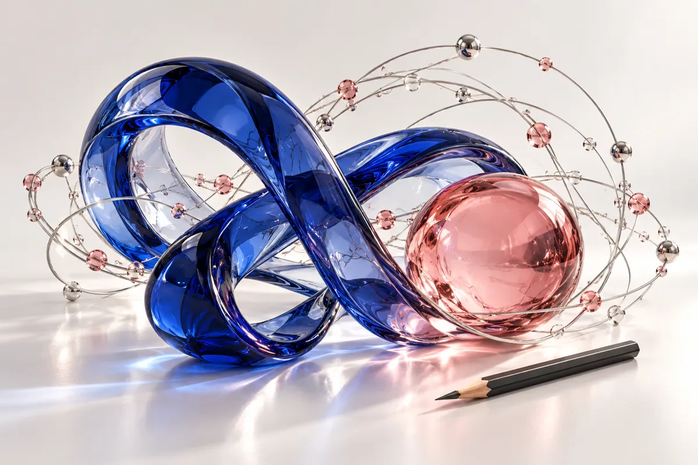

AI & data science
Machine Learning · Data Analysis · Data Visualization · Computer Vision
PythonPower BIPandasScikit-learn
HELLO, I’M
Data Science & Artificial Intelligence · Jordan
I turn data into insight, and ideas into applications. Explore the things I build, the questions I ask, and the stories I tell.

01 / A LITTLE ABOUT ME
I’m Rama, based in Jordan, with a background in Data Science and Artificial Intelligence at Al al-Bayt University. I enjoy building practical AI applications, exploring data, and making complex ideas easier to understand.
My projects span medical AI, smart city prediction, travel assistance, chatbots, and career support. Working in teams has taught me to communicate clearly, solve problems collaboratively, and take the lead when a project needs direction.
Drawing and writing shape how I approach technology: with attention to detail, a sense of story, and curiosity about the people on the other side of the screen.
02 / THE PROJECT STUDIO
Choose a project. Explore its screens and stories.
03 / CAPABILITIES
Machine Learning · Data Analysis · Data Visualization · Computer Vision
Turning ideas into connected applications and interfaces.
Data storage, AI workflows, and collaborative development.
Problem Solving · Critical Thinking · Communication · Teamwork · Team Leadership
04 / LEARNING & EXPERIENCE
Data Science & Artificial Intelligence
Fourth year · Expected graduation: 2027
Academic standing: Very GoodCompleted a virtual internship in Artificial Intelligence, with a completion certificate and a letter of recommendation.
Read recommendationData entry and verification, administrative record organization, book inventory, daily operational support, and assistance with children's activities.
Participated in a training program with the Jordan River Foundation.
Professional and English communication, workplace readiness, teamwork, presentations, and effective use of AI tools through prompt engineering.
Delivered an AI awareness workshop for school students, introducing AI concepts and real-world applications. Participated in technical workshops and innovation programs in AI and robotics, and gained experience leading and collaborating with teams.
05 / THE MILESTONE ARCHIVE
31 certificates & documents
Every milestone, individually listed.
06 / BEYOND CODE
Art gives me another way to observe. Writing gives me another way to understand.
University short story competition
«لكنني اخترتُ أن أضع نفسي في المقام الأول و لن ألتف إلى حرب لا يُكتب لي فيها الانتصار .»A story of attachment, self-discovery, and choosing to return to yourself.
Written by Rama Feras Alodat07 / START A CONVERSATION
I’m interested in opportunities in AI, data science, and collaborative projects that turn thoughtful ideas into useful experiences.